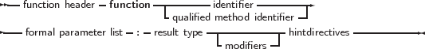

A function declaration defines an identifier and associates it with a block of code. The block of code will return a result. The function can then be called inside an expression, or with a procedure statement, if extended syntax is on.
_________________________________________________________________________________________________________
Function declaration

___________________________________________________________________
The result type of a function can be any previously declared type. contrary to Turbo Pascal, where only simple types could be returned.